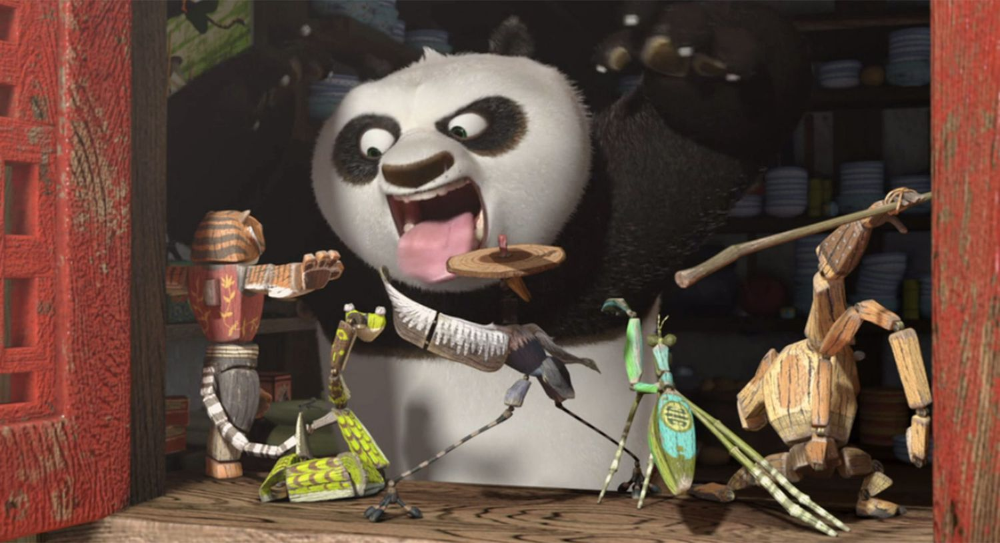

Kung Fu Panda is an American martial arts comedy media franchise that started in 2008 with the release of the animated film Kung Fu Panda produced by DreamWorks Animation. Following the adventures of the titular Po Ping (primarily voiced by Jack Black and Mick Wingert), a giant panda who is improbably chosen as the prophesied Dragon Warrior and becomes a master of kung fu, the franchise is set in a fantasy wuxia genre version of ancient China populated by anthropomorphic animals. Although everyone initially doubts him, including Po himself, he proves himself worthy as he strives to fulfill his destiny. The franchise consists mainly of four animated films: Kung Fu Panda (2008), Kung Fu Panda 2 (2011), Kung Fu Panda 3 (2016) and Kung Fu Panda 4 (2024), as well as three television series: Kung Fu Panda: Legends of Awesomeness (2011–2016), The Paws of Destiny (2018–2019), and The Dragon Knight (2022–2023). The first two films were distributed by Paramount Pictures, the third film was distributed by 20th Century Fox and the fourth was distributed by Universal Pictures, while the television series respectively aired on Nickelodeon and Nicktoons, Amazon Prime, and Netflix. Six short films: Secrets of the Furious Five (2008), Kung Fu Panda Holiday (2010), Kung Fu Panda: Secrets of the Masters (2011), Kung Fu Panda: Secrets of the Scroll, Panda Paws (both 2016), and Dueling Dumplings (2024), have also been produced.
